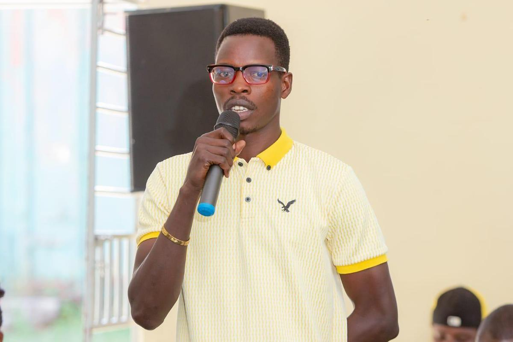
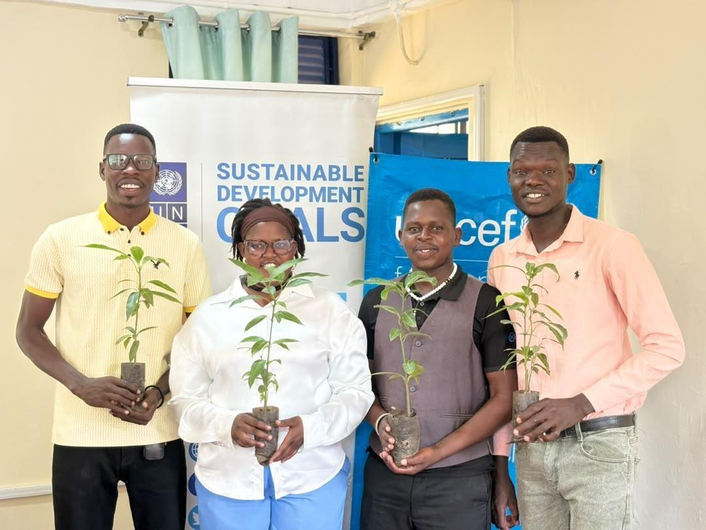
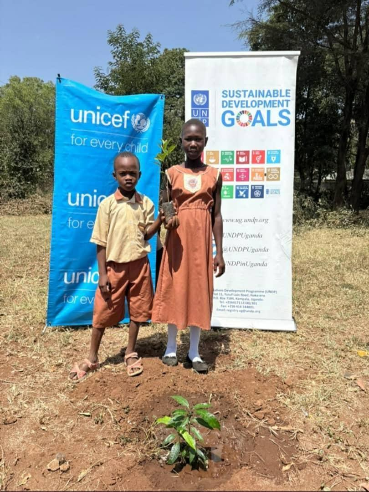
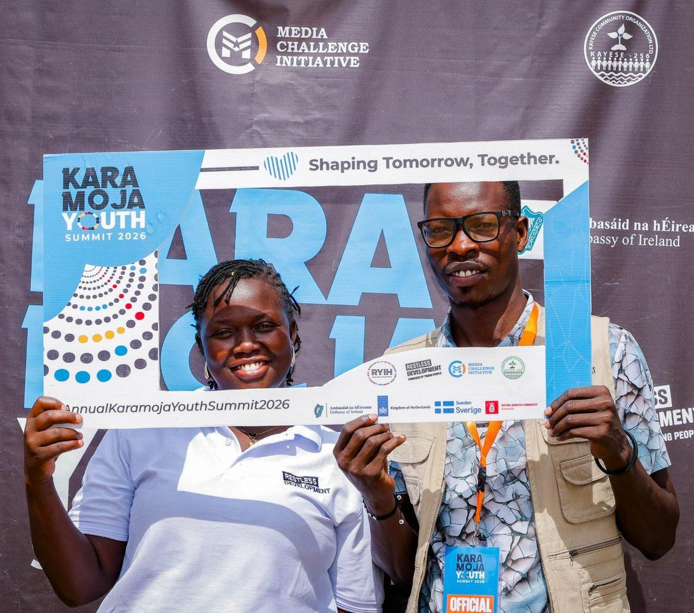
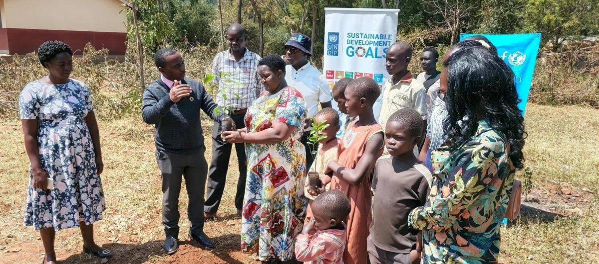
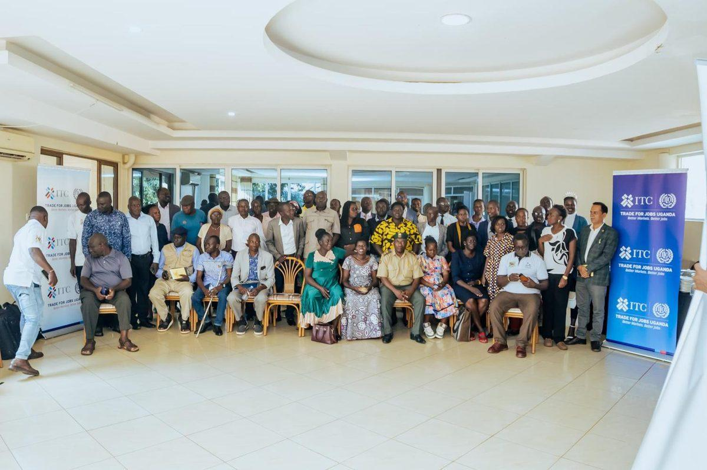

Skills & Training Access
Identify out-of-school youth, place them into technical and vocational training, and support them through to DIT / UVQF certification.
Skill & Equip Youth Initiative for Karamoja
We exist for one reason: to move young people in Karamoja out of idleness and into dignified, paid work — with market-relevant skills, nationally recognised certification, and a direct route into employment or self-employment.






Who We Are
SEYIK is a registered Community-Based Organisation founded in 2024 by young people of Karamoja, for young people. We do not train young people and count them. We train them, certify them, place them, and follow them.
What We Do
We identify and prepare young people, place them into training, connect that training to real market demand, and use the evidence to open more doors.
Identify out-of-school youth, place them into technical and vocational training, and support them through to DIT / UVQF certification.
Job placement, apprenticeships, start-up toolkits, savings groups and business fundamentals — so certificates become income.
We train for work that actually exists — building relationships with employers, contractors, traders and government programmes.
We generate youth employment evidence from Karamoja and use it to influence district budgets and national skilling policy.
The Question That Matters
That is the question we hold ourselves accountable to. Our headline indicator is the proportion of participants earning a verified income twelve months after training.
Built Into Every Cohort
These are not separate programmes. They are conditions we build into every cohort — because without them the core work fails.
Our Cross-Cutting CommitmentsPartner With Us
Cohort sponsorship, retention support, systems strengthening, and core costs — so we can move young people from identification through certification into verified employment.